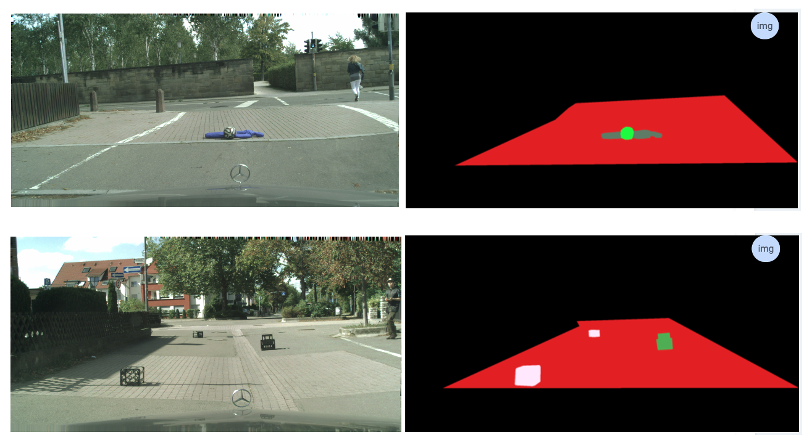
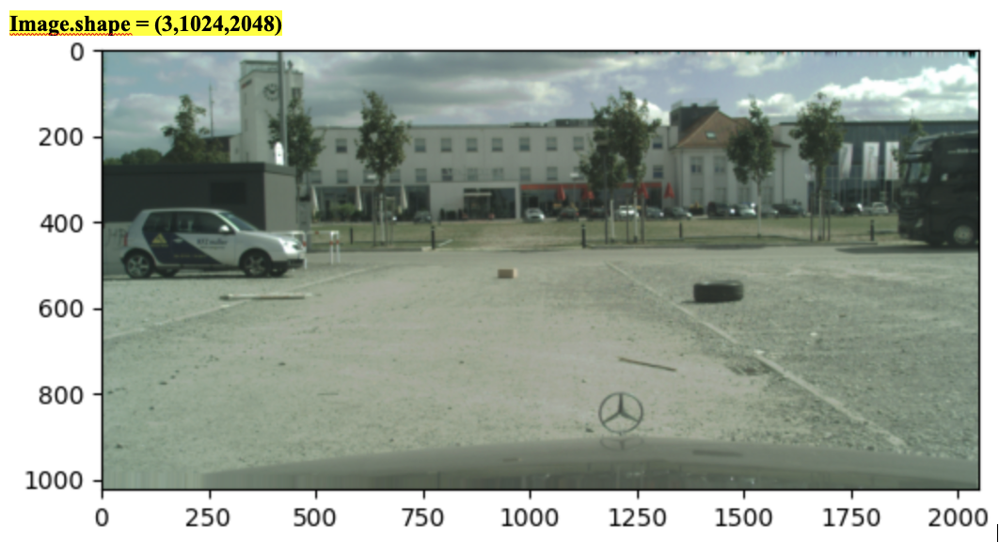
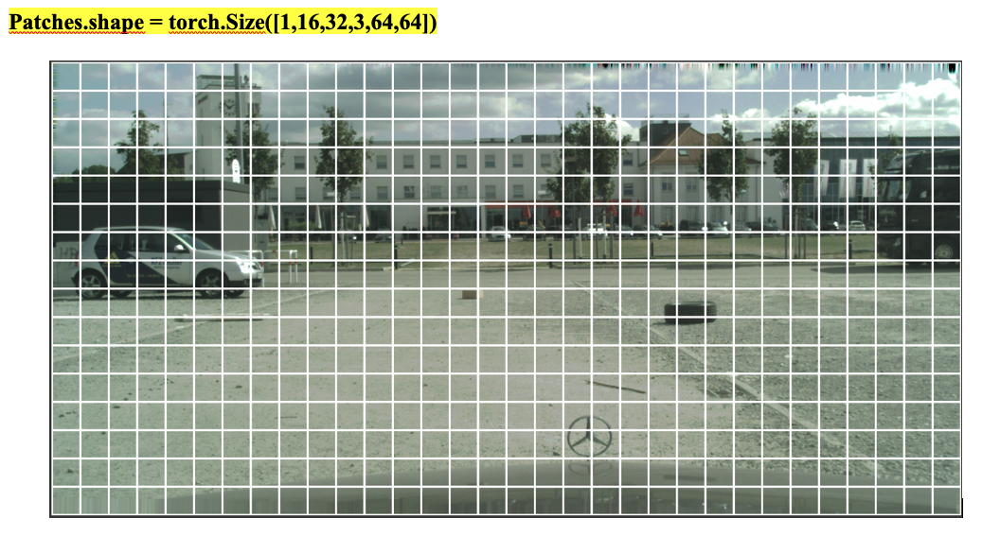
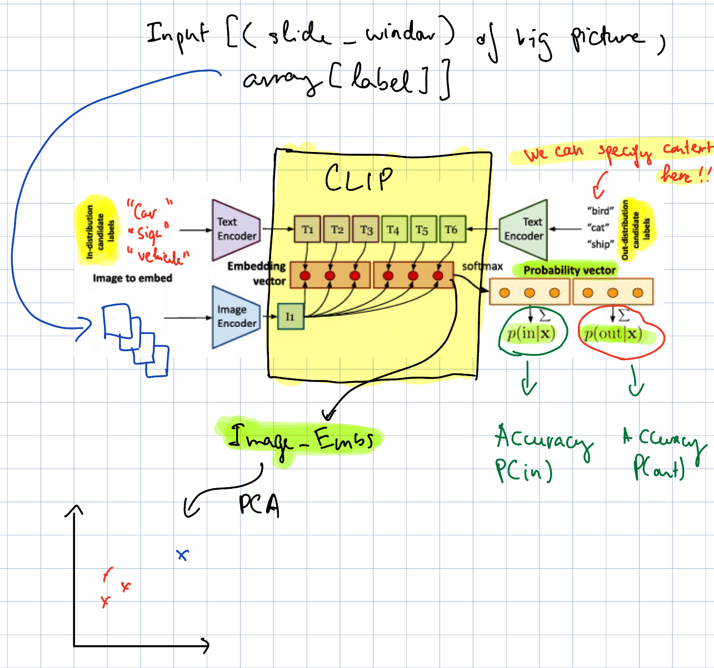
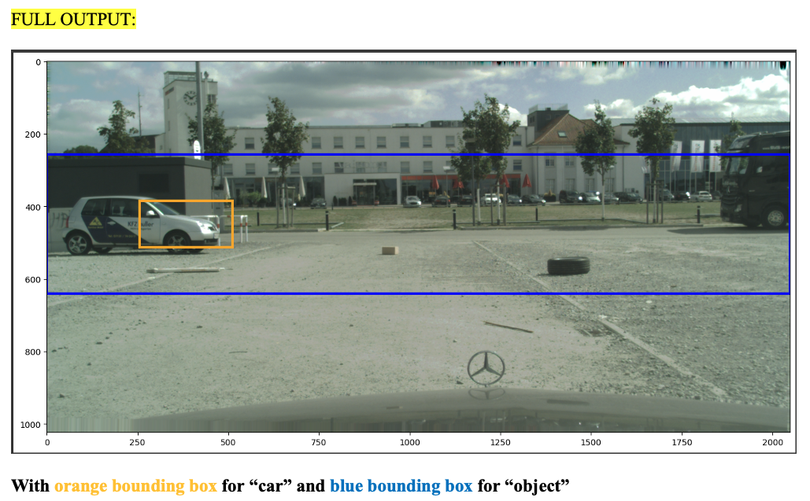
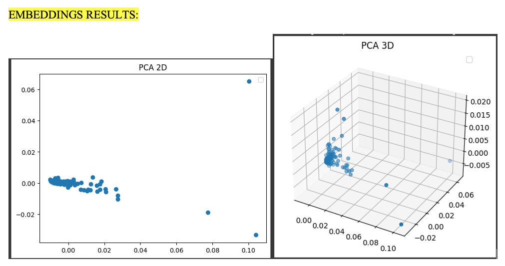

Introduction
In the age of data science and AI, robotics and autonomous vehicles are extremely hot in both research and application. We can easily see that any car brand has installed their autonomous driving system into their car. And this the future of the world. But all state-of-the-art (SOTA) models for Object Detection were trained with very big dataset with limited class label, so what will happen when the model see something not from their dataset, will it capture that “thing”? For example, if the radar of autonomous vehicle sees an elephant on the street, what will happen? That is why we call this project “Open-Set Object Detection”.
Supervisor
Professor Liam Paull
Contact: liam.paull@umontreal.ca
Objectives
Milestones
Lost and Found dataset
Details
Description: Image with small obstacles on the road (often caused by lost cargo)
Size: Train Set - 1036 image / Test Set – 1203 image, with image size = (1024,2048,3)
Details: Dataset give raw image and segmented image
Data preprocessing
Since the image has shape of (1024,2048, 3), then we split it to patches with size of 64x64
 Requirement
Computer resource
Parameters
Librairies
Schema
We are using CLIP multi-modal for our pipeline
OUTPUT and DETECTION
OBJECT DETECTION
Embeddings plot with PCA
Questions? Drop me a note!